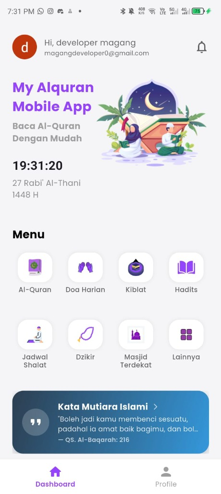
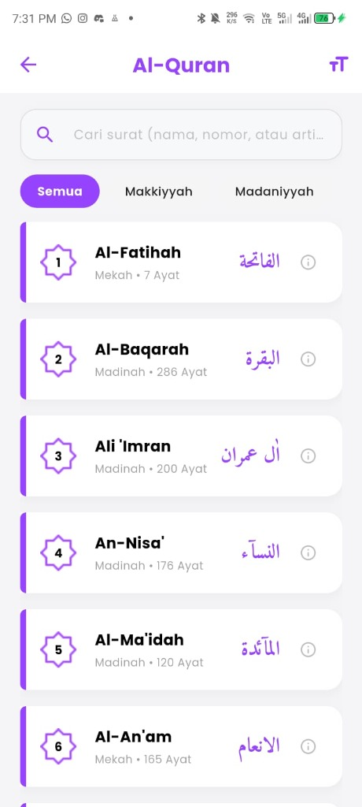
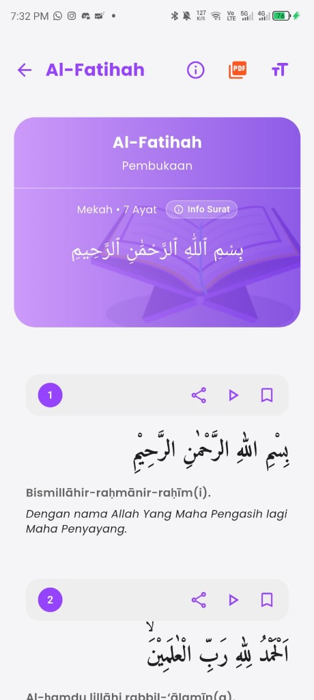
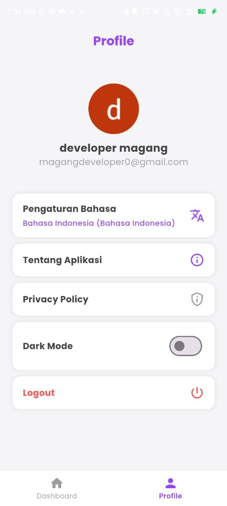

MY ALQURAN & ISLAMIC COMPANION APP
Aplikasi panduan ibadah komprehensif & tilawah Al-Qur'an digital yang dirancang untuk kenyamanan umat Muslim sehari-hari. Menghadirkan teks 114 surah beresolusi tinggi, transliterasi Latin fonetik, terjemahan resmi Kemenag RI, pemutar audio murottal qari merdu per ayat, kompas penunjuk arah kiblat berbasis sensor GPS, dan kalender Hijriyah otomatis.
EKSPLORASI TAMPILAN & FITUR UTAMA APLIKASI

Beranda Utama (Dashboard Ibadah Terpadu)
Dirancang sebagai pusat aktivitas harian pengguna dengan tata letak bersih, intuitif, dan bebas distraksi, memudahkan navigasi ke seluruh fitur ibadah penting dalam satu sentuhan.
- Jam Digital & Penanggalan Kalender Hijriyah: Menampilkan waktu lokal presisi serta tanggal kalender Islam otomatis (contoh: 27 Rabi' Al-Thani 1448 H).
- 8 Menu Akses Cepat (Quick Access Grid):
- Widget "Kata Mutiara Islami": Menghadirkan ayat-ayat tadabbur Al-Qur'an harian (contoh: QS. Al-Baqarah: 216) untuk motivasi dan ketenangan hati pengguna.
- Header Personal & Notifikasi: Menyapa pengguna secara personal dengan status akun serta ikon lonceng untuk notifikasi waktu sholat dan pengingat tilawah.
Katalog & Indeks 114 Surah Al-Qur'an
Memungkinkan eksplorasi seluruh surah Al-Qur'an dengan pencarian instan dan filter kategori tempat turunnya wahyu, mempermudah pengguna menemukan surat yang ingin dibaca.
- Pencarian Cerdas (Live Search): Fitur filter cepat berdasarkan nama surah, nomor surat, maupun terjemahan/arti surat.
- Filter Kategori Surah: Tab pengelompokan surah Semua, Makkiyyah, dan Madaniyyah.
- Ornamen Lencana Bintang Islami: Nomor urut surah dihiasi ornamen bintang segi delapan (Islamic Octagram star badge) dengan aksen warna ungu yang anggun.
- Info Metadata Surah: Setiap kartu surah memuat nama latin, kaligrafi Arab resmi (misal: الفاتحة, البقرة, آل عمران), tempat turun surat, dan total jumlah ayat.
- Kontrol Ukuran Teks ("TT"): Tombol penyesuai ukuran font langsung dari bar judul untuk kenyamanan pembaca.
Baca Ayat & Pemutar Audio Murottal (Surat View)
Pengalaman membaca Al-Qur'an digital yang imersif dan terstruktur dengan penyajian teks Arab berkualitas tinggi, transliterasi Latin, terjemahan resmi, serta audio qari merdu per ayat.
- Header Surah Eksklusif: Banner gradien ungu dengan kaligrafi Basmalah, informasi tempat turun, total ayat, dan tombol ⓘ Info Surat untuk melihat asbabun nuzul.
- Tiga Lapisan Pembacaan per Ayat: Teks Arab beresolusi tinggi yang nyaman dibaca, transliterasi Latin (fonetik bacaan), serta terjemahan bahasa Indonesia resmi Kemenag.
- Fitur Interaktif per Ayat: Pemutar murottal audio per ayat, share kutipan ayat ke WhatsApp/sosial media, dan bookmark penanda bacaan terakhir.
- Mode Baca Mushaf PDF: Ikon akses cepat untuk menampilkan versi PDF atau mushaf cetak standar.
Profil Pengguna & Preferensi Aplikasi
Pusat kustomisasi pengalaman pengguna yang mencakup pengaturan tema visual, bahasa antarmuka, privasi, dan akun pengguna.
- Dukungan Dark Mode (Mode Gelap): Toggle sakelar instan untuk beralih antara tema terang dan tema gelap yang ramah mata saat membaca di malam hari.
- Pengaturan Multi-Bahasa: Dukungan lokalisasi bahasa (Bahasa Indonesia) untuk seluruh teks navigasi aplikasi.
- Manajemen Profil & Akun: Informasi akun pengguna (nama, email, inisial avatar) untuk sinkronisasi bookmark dan riwayat bacaan.
- Kebijakan Privasi & Tentang Aplikasi: Menjamin transparansi penggunaan sensor lokasi/GPS hanya untuk perhitungan kiblat dan jadwal sholat.
TAMPILAN INTERAKTIF RESOLUSI TINGGI (HD)
Dashboard & Kalender Hijriyah
Waktu lokal presisi, kalender Islam otomatis, mutiara Qurani, dan 8 menu cepat.

Katalog 114 Surah Al-Qur'an
Indeks surah lengkap, filter Makkiyyah/Madaniyyah, dan kaligrafi Arab resmi.

Tilawah & Audio Murottal
Teks Arab beresolusi tinggi, transliterasi Latin, terjemahan resmi, dan pemutar audio.

Profil & Mode Gelap
Kustomisasi tema Dark Mode, sinkronisasi bookmark riwayat tilawah, dan pengaturan.
ARSITEKTUR TEKNIS & HIGHLIGHT IMPLEMENTASI
CLEAN ARCHITECTURE & BLOC
Struktur kode modular memisahkan Data Layer (API & Local DB), Domain Layer (Use Cases), dan Presentation Layer. Menggunakan BLoC untuk alur state management yang predictable, testable, dan reaktif.
OFFLINE-FIRST & SQLITE CACHING
Seluruh basis data ayat Al-Qur'an, terjemahan, dan bookmark di-cache secara lokal ke dalam SQLite database. Memungkinkan pengguna membaca seluruh surah tanpa ketergantungan koneksi internet.
SENSOR KOMPAS & GPS REAL-TIME
Integrasi sensor magnetometer perangkat dan GPS geolocator untuk menghitung azimut sudut Kiblat ke arah Ka'bah di Mekkah secara akurat, serta menentukan jadwal shalat 5 waktu otomatis.
AUDIO STREAMING ENGINE
Pemutar audio Murottal qari per ayat dengan manajemen audio playback state yang presisi, mendukung background audio session, kontrol pause/resume yang responsif, dan konsumsi baterai yang efisien.
TEKNOLOGI & INFORMASI APLIKASI
Tertarik Mendiskusikan Proyek Serupa?
Membangun aplikasi mobile multi-fitur dengan integrasi sensor perangkat, caching offline, dan audio engine membutuhkan arsitektur yang solid. Mari diskusikan bersama Irfan.